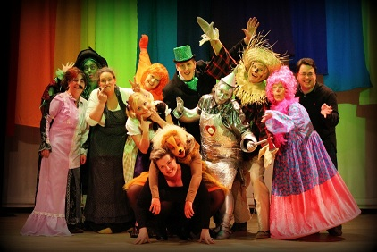

Houtse Toneelgroep
We gaan terug in de tijd, naar 1975, het jaar waarin de Houtse Toneelgroep opgericht werd als onderdeel van de S.O.M. (Samenlevings Opbouw Mierlo-Hout). De reden hiervoor was, dat in de jaren zeventig allerlei jeugd-clubs werden opgericht met uiteenlopende activiteiten. Aangezien er een duidelijke wens was om de jeugd ook kennis te laten maken met toneel, was het zorgen voor leiding noodzakelijk. De beste weg leek het oprichten van een toneelgroep voor volwassenen en zo ging onder leiding van Dhr. Stienen in 1975 de Houtse Toneelgroep van start.
Sinds de oprichting heeft de Houtse Toneelgroep een uitgebreid repertoire aan toneelstukken gespeeld; van kluchten tot thrillers en van komedies tot drama’s. De Houtse Toneelgroep profileert zich niet alleen als een toneelgroep voor volwassenen ook is er kindertoneel; toneel door volwassenen voor de jeugd, via dit initiatief willen we ook de jeugd kennis laten maken met toneel immers: de jeugd heeft de toekomst!
In een tijd waarin steeds nieuwe media hun opwachting maken, houdt de Houtse Toneelgroep zich op een voortreffelijke manier staande. De Houtse Toneelgroep is een bloeiende vereniging, en is als het maar enigszins kan actief bij activiteiten in de wijk of stad.
Houtse Toneelgroep – Het is weer tijd voor toneel!